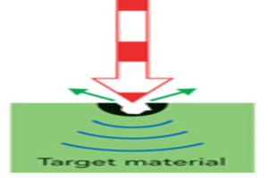

This calculator will help you to compute the damage threshold conversion

$LIDT'=LIDT\sqrt{\frac{\tau}{\tau '}}$
Damage threshold before conversion LIDT ,Damage threshold after conversion LIDT' ,Pulse width before conversion $\tau$, Pulse width after conversion $\tau '$